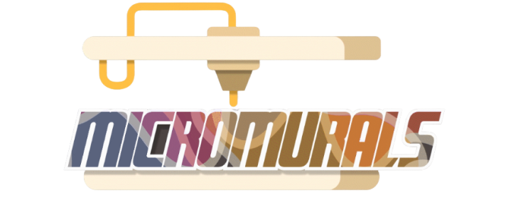

Sponsors




Help make our synbio ideas become reality! Any amount will go towards purchasing much-needed supplies for our current project. Thanks to the generosity of our sponsors, the Cornell iGEM Project Team is able to make meaningful advances and discoveries every year.